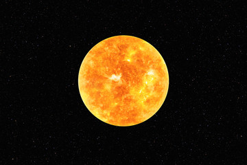
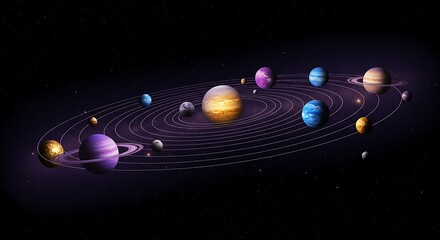

Overview
What Is the Solar System?
The solar system is made up of the Sun and all objects that orbit around it, including planets, moons, asteroids, and comets. Gravity keeps these objects in constant motion around the Sun. Scientists believe the solar system formed about 4.6 billion years ago from a cloud of gas and dust. The Sun contains most of the mass in the solar system. Each planet has unique characteristics and conditions. Studying the solar system helps us understand Earth's place in space.
Why the Solar System Matters
Learning about the solar system helps scientists explore how planets form and evolve over time. It also allows researchers to search for signs of life beyond Earth. Space missions have revealed important information about planetary atmospheres and surfaces. The solar system acts as a natural laboratory for understanding physics and astronomy. Advances in technology have made space exploration more accessible. This knowledge continues to shape future discoveries.
- The Sun is a star
- There are eight planets
- Most planets have moons
- Asteroids orbit the Sun


Learn more at NASA Solar System and Space.com.